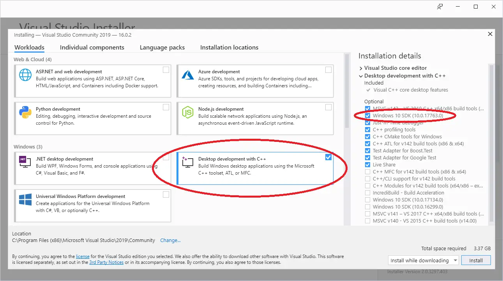
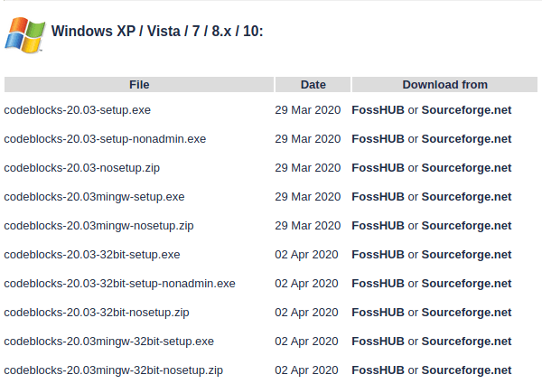
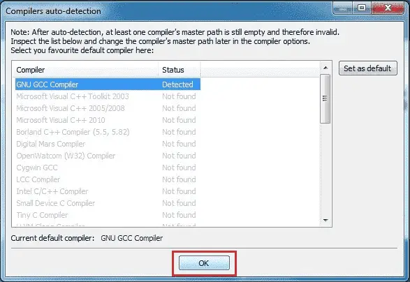

An Integrated Development Environment (IDE) is a piece of software designed to make it easy to develop, build, and debug your programs.
A typical modern IDE will include:
- Some way to easily load and save your code files.
- A code editor that has programming-friendly features, such as line numbering, syntax highlighting, integrated help, name completion, and automatic source code formatting.
- A basic build system that will allow you to compile and link your program into an executable, and then run it.
- An integrated debugger to make it easier to find and fix software defects.
- Some way to install plugins so you can modify the IDE or add capabilities such as version control.
Some C++ IDEs will install and configure a C++ compiler and linker for you. Others will allow you to plug in a compiler and linker of your choice (installed separately).
And while you could do all of these things separately, it’s much easier to just install an IDE and be able to do all of these things from a single interface.
So let’s install one!
Choosing an IDE
The obvious next question is, “which one?”. Many IDEs are free (in price), and you can install multiple IDEs if you wish to try more than one. We’ll recommend a few of our favorites below.
If you have some other IDE in mind, that’s fine too. The concepts we show you in these tutorials should generally work for any decent modern IDE. However, various IDEs use different names, layouts, key mappings, etc… so you may have to do a bit of searching in your IDE to find the equivalent functionality.
Tip
To get the most value out of this site, we recommend installing an IDE that comes with a compiler that supports at least C++17.
If you’re restricted to using a compiler that only supports C++14 (due to educational or business constraints), many of the lessons and examples will still work. However, if you encounter a lesson that uses capabilities from C++17 (or newer) and you’re using an older language compiler, you’ll have to skip it or translate it to your version, which may or may not be easy.
You should not be using any compiler that does not support at least C++11 (which is typically considered the modern minimum spec for C++).
We recommend installing the newest version of a compiler. If you can’t use the newest version, these are the absolute minimum compiler versions with C++17 support:
- GCC/G++ 7
- Clang++ 8
- Visual Studio 2017 15.7
Visual Studio (for Windows)
If you are developing on a Windows 10 or 11 machine, then we strongly recommend downloading Visual Studio 2022 Community.
Once you run the installer, you’ll eventually come to a screen that asks you what workload you’d like to install. Choose Desktop development with C++. If you do not do this, then C++ capabilities will not be available.
The default options selected on the right side of the screen should be fine, but please ensure that the Windows 11 SDK (or Windows 10 SDK if that is the only one available) is selected. Windows 11 SDK apps can run on Windows 10.

Code::Blocks (for Linux or Windows)
If you are developing on Linux (or you are developing on Windows but want to write programs that you can easily port to Linux), we recommend Code::Blocks. Code::Blocks is a free, open source, cross-platform IDE that will run on both Linux and Windows.
For Windows users
Make sure to get the version of Code::Blocks that has MinGW bundled (it should be the one whose filename ends in mingw-setup.exe). This will install MinGW, which includes a Windows port of the GCC C++ compiler:

Code::Blocks 20.03 ships with an outdated version of MinGW that only supports C++17 (currently one version back from the latest version of C++). If you want to use the latest version of C++ (C++20), you will need to update MinGW. To do so, follow this procedure:
- Install Code::Blocks as per the above.
- Close Code::Blocks if it is open.
- Open Windows File Explorer (Keyboard shortcut Win-E).
- Navigate to your Code::Blocks install directory (probably C:\Program Files (x86)\CodeBlocks).
- Rename the “MinGW” directory to “MinGW.bak” (in case something goes wrong).
- Open a browser and navigate to https://winlibs.com/.
- Download an updated version of MinGW-w64. You probably want the one under Release Versions -> UCRT Runtime -> LATEST -> Win64 -> without LLVM/Clang/LLD/LLDB -> Zip archive.
- Extract the “mingw64” folder to your Code::blocks install directory.
- Rename “mingw64” to “MinGW”.
Once you have confirmed the updated compiler works, you can delete the old folder (“MinGW.bak”).
For Linux users
Some Linux installations may be missing dependencies needed to run or compile programs with Code::Blocks.
Debian-based Linux users (such as those on Mint or Ubuntu) may need to install the build-essential package. To do so from the terminal command line, type: sudo apt-get install build-essential.
Arch Linux users may need to install the base-devel package.
Users on other Linux variants will need to determine what their equivalent package manager and packages are.
When you launch Code::Blocks for the first time, you may get a Compilers auto-detection dialog. If you do, make sure GNU GCC Compiler is set as the default compiler and then select the OK button.

Q: What do I do if I get a "Can’t find compiler executable in your configured search paths for GNU GCC Compiler" error?
Try the following:
- If you’re on Windows, make sure you’ve downloaded the version of Code::Blocks WITH MinGW. It’s the one with “mingw” in the name.
- Try going to settings, compiler, and choose “reset to defaults”.
- Try going to settings, compiler, toolchain executables tab, and make sure “Compiler’s installation directory” is set to the MinGW directory (e.g. C:\Program Files (x86)\CodeBlocks\MinGW).
- Try doing a full uninstall, then reinstall.
- Try a different compiler.
Visual Studio Code (for experienced Linux, macOS, or Windows users)
Visual Studio Code (also called “VS Code”, not to be confused with the similarly named “Visual Studio Community”) is a code editor that is a popular choice with experienced developers because it is fast, flexible, open source, works for multiple programming languages, and is available for many different platforms.
The downside is that VS Code is much harder to configure correctly than other choices on this list (and on Windows, harder to install as well). Before proceeding, we recommend reading through the installation and configuration documents linked below to ensure you understand and are comfortable with the steps involved.
Warning
This tutorial series does not have complete instructions for VS Code.
Visual Studio Code is not a good option for C++ beginners, and readers have reported many different challenges getting Visual Studio Code installed and configured correctly for C++.
Please do not choose this option unless you are already familiar with Visual Studio Code from prior use, or have experience debugging configuration issues.
We cannot provide installation or configuration support for Visual Studio Code on this site.
A tip o’ the hat to user glibg10b for providing an initial draft of VS Code instructions across multiple articles.
For Linux users
VS Code should be downloaded using your distribution’s package manager. The VS Code instructions for linux cover how to do this for various Linux distributions.
Once VS Code is installed, follow the instructions on how to configure C++ for linux.
For Mac users
The VS Code instructions for Mac detail how to install and setup VS Code for macOS.
Once VS Code is installed, follow the instructions on how to configure C++ for Mac.
For Windows users
The VS Code instructions for Windows detail how to install and setup VS Code for Windows.
Once VS Code is installed, follow the instructions on how to configure C++ for Windows.
Other macOS IDEs
Other popular Mac choices include Xcode (if it is available to you) and the Eclipse code editor. Eclipse is not set up to use C++ by default, and you will need to install the optional C++ components.
Other compilers or platforms
Q: Can I use a web-based compiler?
Yes, for some things. While your IDE is downloading (or if you’re not sure you want to commit to installing one yet), you can continue this tutorial using a web-based compiler. We recommend one of the following:
- TutorialsPoint
- Wandbox (can choose different versions of GCC or Clang)
- Godbolt (can see assembly)
Web-based compilers are fine for dabbling and simple exercises. However, they are generally quite limited in functionality -- many won’t allow you to create multiple files or effectively debug your programs, and most don’t support interactive input. You’ll want to migrate to a full IDE when you can.
Q: Can I use a command-line compiler (e.g. g++ on Linux)?
Yes, but we don’t recommend it for beginners. You’ll need to find your own editor and look up how to use it elsewhere. Learning to use a command line debugger is not as easy as an integrated debugger, and will make debugging your programs more difficult.
Q: Can I use other code editors or IDEs, such as Eclipse, Sublime, or Notepad++?
Yes, but we don’t recommend it for beginners. There are many great code editors and IDEs that can be configured to support a wide variety of languages, and allow you to mix and match plugins to customize your experience however you like. However, many of these editors and IDEs require additional configuration to compile C++ programs, and there’s a lot that can go wrong during that process. For beginners, we recommend something that works out of the box, so you can spend more time learning to code and less time trying to figure out why your code editor isn’t working properly with your compiler or debugger.
IDEs to avoid
You should avoid the following IDEs altogether because they do not support at least C++11, do not support C++ at all, or are no longer actively supported or maintained:
- Borland Turbo C++ -- does not support C++11
- Visual Studio for Mac -- does not support C++. (Note: this is a different product than VS Code).
- Dev C++ -- not actively supported
There is no good reason to use an outdated or unsupported compiler when lightweight, free alternatives that support modern C++ exist.
When things go wrong (a.k.a. when IDE stands for “I don’t even…”)
IDE installations seem to cause their fair share of problems. Installation might fail outright (or installation might work but the IDE will have problems when you try to use it due to a configuration issue). If you encounter such issues, try uninstalling the IDE (assuming it installed in the first place), reboot your machine, disable your antivirus or anti-malware temporarily, and try the installation again.
If you’re still encountering issues at this point, you have two options. The easier option is to try a different IDE. The other option is to fix the problem. Unfortunately, the causes of installation and configuration errors are varied and specific to the IDE software itself, and we’re unable to effectively advise on how to resolve such issues. In this case, we recommend copying the error message or problem you are having into your favorite search engine (such as Google or Duck Duck Go) and trying to find a forum post elsewhere from some poor soul who has inevitably encountered the same issue. Often there will be suggestions on things you can try to remedy the issue.
Moving on
Once your IDE is installed (which can be one of the hardest steps if things don’t go as expected), or if you’re temporarily proceeding with a web-based compiler, you are ready to write your first program!